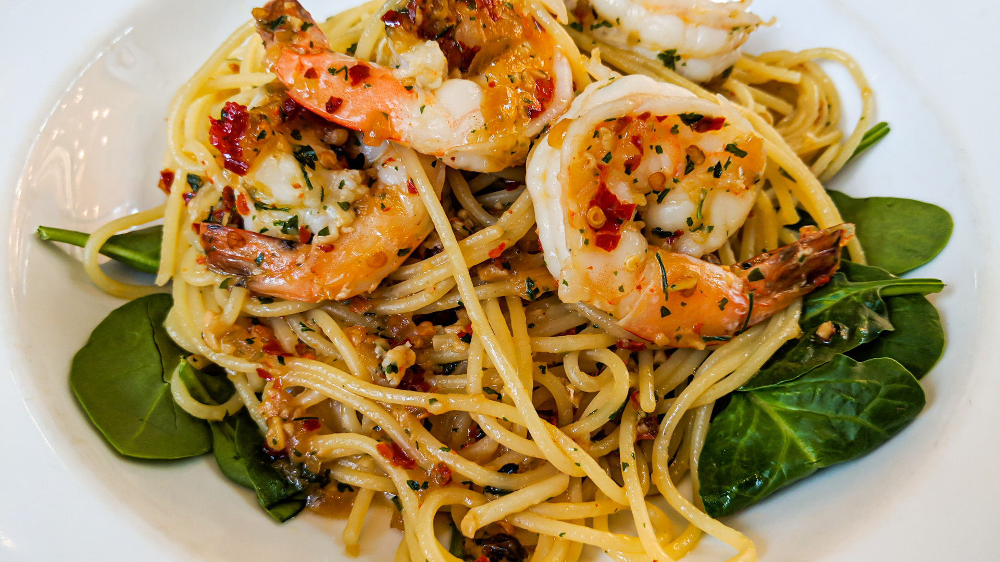
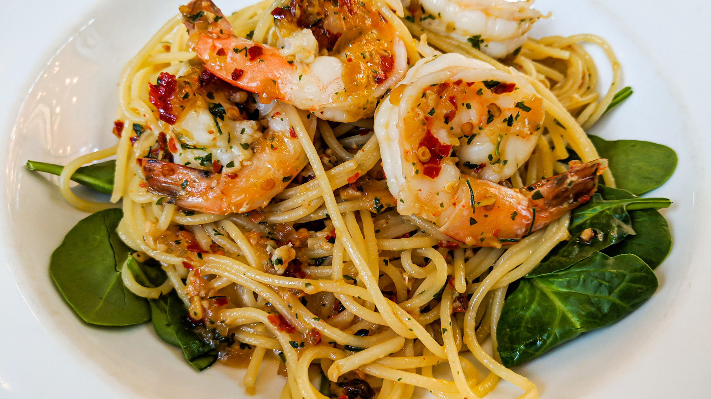

(Click on the pictures to skip to those sections!)
"To eat is a necessity, but to eat intelligently is an art."
Once you've tasted the umami of Sea Urchin, there's no turning back.
The best pasta isn't Carbonara and Vongole - but Aglio Olio. Simmered in Garlic and drenched with olive oil, this is best paired with lobster bisque and sirlion steak. MamaMia~
Oysters taste best when freshly shucked. Best paired with a glass of white wine or champagne.

THE BEST COMBINATION EVER! Oysters already taste so good on it's own, imagine topping it with Ikura and Uni?? That's like the 3 heavenly kings of Japanese Cuisine.